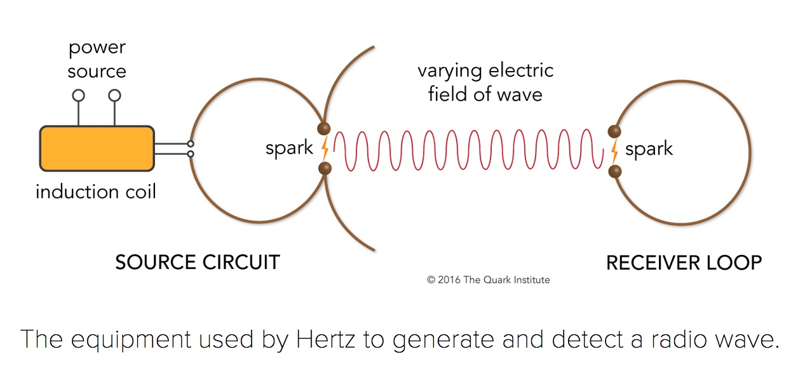

ASTR 1210 (O'Connell) Supplement
SCIENCE, TECHNOLOGY, AND SOCIETY -- AN ESSAY
INTRODUCTION
We usually use the word
"technology" to refer loosely to the raft of
electronic devices and software services that seem to be everywhere in
our lives today.
But "technology" has a much broader meaning. Anything that is useful to
humans -- that has some
practical application -- is an example of
technology. That includes all electronics, of course, but it also
includes almost every other material thing in our everyday lives, from
T-shirts to refrigerators to skyscrapers; and it also refers to the
enormous swath of practical knowledge and methodology that we make use
of to survive -- as in agriculture and medicine.
Technology ranges from the highly sophisticated to the humble.
PowerPoint slides are a familiar form of "teaching technology" --- but
so is a piece of chalk. Important technologies in earlier times were
very basic: the first human technologies to be developed were fire,
stone cutting tools and weapons, and clothing from animal skins.
Although other animals are capable of
employing
primitive tools, our human progenitors had surpassed them in
sophistication as long as 3 million years ago. The fossil record
shows that invention was slow at first, the important steps taking
tens of thousands of years. That was because hunter-gatherer
societies were very conservative and not welcoming of innovation
because they lived on the edge of survival and could not take chances
on diverting labor.
Almost by definition,
civilizations are based on technology.
The earliest civilizations in Mesopotamia and Egypt (ca. 4000-3000 BC)
depended on the extensive development of technologies for building
homes and governmental/religious structures; for agriculture, water
supplies, transportation, ceramics, weaponry, methods of storing and
conveying information, and so on. Domestication of horses, cattle,
dogs, and other animals was another key technology.
Many of the simple things we take for granted today -- like cotton
thread, or glass windows, or aspirin -- are technologies that would
have been highly prized by ancient societies.
Although they may not have been determinative, the available
technologies were of great importance in shaping the behavior and
values of early human societies -- the place and character of manual
labor, for instance.
Left: The Giza Pyramids of Egypt (ca. 2500 BC); Right:
Maya Kukulcan Pyramid (Chichen Itza, Mexico; ca. 900 AD).
Useful innovations spread quickly among societies that were in close
contact with one another, but independent parallel development tended to
occur in isolated societies. The ceremonial pyramids of Egypt and the
Maya (see above) --- developed 8000 miles and over 3000 years apart, completely
independently of each other --- are examples. The rates of development
differed, and the sequences were never exact: for instance, the wheel
was not important in North or South America before European contact in
1492. And although civilizations rise and fall, their basic
technologies tend to survive. They are taken over by successor societies
and propagate continuously into the future. As the writer L. Sprague de
Camp put it:
"If there is any one progressive, consistent
movement in human history, it is neither political, nor religious, nor
aesthetic. Until recent centuries it was not even scientific. It is
the growth of technology, under the guidance of the
engineers."
Why did de Camp say "not even scientific" here? Don't we think of
science as being essentially
equivalent to technology
and also as a continually "progressive movement"?
Yes, science and technology are often conflated. But they are
not
identical. There are
fundamental distinctions that are important to
understand, and those are the main subject of this course supplement.
As for interruptions in the "progressive" continuity of
science: de Camp is referring to what happened to the accomplishments
of the ancient Greeks in philosophy, science, and mathematics. In the
700 years prior to 200 AD, the Greeks had made great strides (among
their contemporaries) in understanding the physical and biological
world. They laid the foundations of the mathematics used to this day
and had even developed an
analog
computer. Their achievements in astronomy would not be superseded
for over 1300 years. But after Greek culture was absorbed by the
Roman and Byzantine Empires, this progress stalled and was even
threatened with extinction because the trove of Greek manuscripts was
scattered and almost destroyed. Enough were preserved, especially by
Islamic scholars (650-1200 AD), who elaborated them to some extent,
that they eventually formed the intellectual basis of the scientific
Renaissance --- but this was not until ca. 1500 AD. Science had been
not only nearly static but also almost forgotten for over a
millennium, whereas technology had progressed, if slowly (e.g. the
compass, Gothic cathedrals, windmills).
The technologies employed by civilizations before 1500 AD may have been
sophisticated in many ways, but they were not grounded on a systematic,
scientific understanding of nature. Today, 500 years after the
beginning of the "scientific revolution," things are different. It is
fair to say that
we now live in a scientific civilization. This
doesn't simply mean that many people are scientists or even that most
people appreciate science (because they don't). Instead, it means that,
whether we know it or not,
we depend on science for our wealth and
well-being; that almost all of our critical technologies are based on
science; and that without science, we would be living in a very
different, and much less comfortable, world. We are benefitting today
from the intellectual capital produced by hundreds of thousands of
scientists and engineers.
In this course supplement, we consider the effects of science and
technology on society and how our scientific understanding of the
operating principles of nature has affected human lives.
Relationship Between Science and Technology
Although science and technology are often intertwined they have
different goals and value systems, and we need to clarify the
distinctions between them:
Science is the attempt to build a systematic understanding of
natural phenomena based on a rigorous empirical standard of truth.
Science provides a conceptual framework for dealing with the world.
This kind of research is often called "fundamental," "unapplied,"
"basic," or "pure." Important examples of scientific accomplishment are
Newton's theory of gravity, Maxwell's discovery of electromagnetic
waves, Leeuwenhoek's discovery of microorganisms, or NASA's planetary
exploration missions.
Technology is the application of our basic knowledge to solve
practical problems (e.g. shelter, food, transport, energy, medicine,
tools, weapons, communication). Technology may use our basic scientific
understanding but doesn't necessarily in itself contribute to it.
Engineering is applied science/technology. Examples: structural and
civil engineering, aeronautics, pharmacology, or the Internet.
Technology always has a societal motivation, whether for ultimate good
or ill, but the main motivation for "basic" science is simply
curiosity and the desire to understand.
Job descriptions:
Scientist: "Be curious"
Technologist: "Be useful"
There is a strongly symbiotic relationship between science and
technology because new technology provides new tools that enable better
scientific understanding and vice versa. Scientists often employ the
most advanced technologies available in their work. The Large Hadron
Collider and the
LIGO gravitational wave
detection observatory are examples of cutting-edge technology put
to use in basic scientific research. In some areas, the distinctions
are blurry. For instance, the push to develop
"high temperature superconductors" is driven by their potential
for applications in lossless electrical power transmission, but the
process of exploring the nature of new, often exotic, materials also
provides new scientific insights.
Until the scientific era, new technologies were developed
through
trial and error, building on intuition drawn from
everyday personal and societal experience. Beginning in the 16th
century, science was a new analytical and contextual mode of thinking
about the natural world. Its influence on technology began slowly in
the 17th and 18th centuries. But the pace accelerated as science
demonstrated its value as a means to solve many problems that at first
seemed intractable: e.g. questions like "what causes bubonic plague?"
or "what are the stars?" By 1875, it was clear that science offered
a
demonstrably reliable and powerful understanding of the natural
world.
Technologists began to realize great advantages by adopting not only the
results of science (Newton's Laws of Motion, thermodynamics,
electromagnetism, chemistry, biology, geology, hydrodynamics, structure
of matter, etc.) but also its methods (critical thinking, skepticism,
rational analysis, empirical testing, calculus, statistics, double-blind
medical trials, etc.).
Today, our scientific understanding of many aspects of the natural world
is truly profound -- as it should be after hundreds of years of
concentrated effort. It encompasses almost everything we encounter in
everyday life. Consequently,
science now usually precedes
technology. Trial and error certainly still features in technology
development, but the essential foundations for experimentation come from
science. Most of the important technologies of the last 200 years have
been based on earlier scientific research.
The Critical Conceptual Path: All
technology is utterly dependent on a huge store of knowledge and
invention that extends far back in human history. For each important
technology, we can construct a "critical conceptual path" of the main
steps leading to its realization. Almost all modern technologies
depend on a long list of discoveries in
curiosity-driven basic science. Most will go all the way back to the
foundation of modern science in the 16th and 17th centuries by the
astronomers
Copernicus. and
Kepler and the physicists
Galileo and
Newton.
Individuals like Galileo, Einstein or Pasteur can make important
breakthroughs, but progress in science inevitably depends on the
contributions of many people. For instance,
a recent study of the development of a new drug to fight
metastatic melanoma concluded that its critical conceptual path
extended back over 100 years and involved 7000 scientists working at
5700 different institutions. Most of this path involved basic
research disconnected from immediate commercial or clinical
applications.
The recent development of vaccines for the COVID-19 virus is a
perfect example of how basic research underpins essential
technology. With older technology, it normally took years to perfect
viral vaccines. However, the discovery of the structure and function
of
the "messenger
RNA" molecule in 1961 began a chain of research that ultimately led to
the very rapid development, in only a few months' time, of COVID-19
vaccines that use mRNA to induce human immune system resistance to the
virus.
Conversion Time: The time scale
for conversion of basic scientific discoveries into practical
technologies varies enormously. Consider some examples from
research in physics:
X-Rays (1895): X-Rays were accidentally discovered by
Roentgen in the course of basic research on the physics of
electromagnetic waves using cathode ray tubes like the one shown
at the right. One of his earliest
X-ray images, of his wife's hand, is also shown. Conversion time
to medical applications: 1 year. This is a good example of
a technological problem that couldn't be solved by trying to solve
it. A direct engineering approach to devising a non-invasive
mechanism to examine internal human anatomy would have failed
utterly.
Human Space Flight (1961): The basic scientific
understanding needed to build rockets and navigate through space
had been established since the 19th century, so the investment of
large amounts of government money (in both the US and USSR) were
able to solve the other formidable technical problems necessary to
enable space flight within 5 years of a political decision to go
forward. Conversion time: 280 years (from Newtonian orbit
theory, the essential conceptual foundation of space flight).
CD/DVD Players (1982): Here, the critical
conceptual path includes Einstein's work on induced transitions of
electrons in atoms (1916), which was the essential idea in
creating the
lasers that are used to convert digital
recordings into electronic signals. (Similar lasers are the basis
of data transmission by fiber-optic cables, now the main
technology used to drive the Internet.) Conversion time: 66
years.
The length and complexity of the critical conceptual path behind the
"latest innovations" is the reason that politicians and opinion-makers
who insist on the "relevance" of scientific research,
especially by expecting near-term applications, are misguided --- and
may even inhibit progress.
The "Big Four" Benefits of Technology to Modern Society
If you asked historians of technology to list the inventions or
technological developments most important to today's society, you would
get a range of opinion on the "top-ten." But any sensible list would
include the following four categories:
Information Technology: None of the refined, modern versions of
human technology would exist without the ability to record vast
amounts of information and transmit it from person to person and
generation to generation. The development of written languages (ca.
3000 BC, in Mesopotamia) was, of course, crucial. Through medieval
times it was possible to convey knowledge on a modest scale by
laborious manual writing and copying and some scattered experiments
with printed material. However, only the advent of mass-produced
printed books based on
Gutenberg's
design of printing presses using movable type (ca. 1440) opened
the doors to the information revolution.
Within 150 years, 200
million volumes had been printed. Books ushered in the modern
age. Science depended on them. Universities flourished because
the ability to deal with large amounts of specialized information
in books became essential to society. Beginning in the mid 19th
century, information transfer proliferated thanks to the automated
rotary press and inventions like the telephone and the linotype
machine. In the last quarter century, the Internet and other
electronic technologies have greatly accelerated the spread and
creation of information, but their societal impact has not yet
matched the monumental watershed established by the printed
book.
Agricultural Genetics: "Genetic engineering," the creation of
artificial life forms, is nothing new. It has been going on for
thousands of years. You will be shocked when you click on
this picture of the most familiar artificial life form.
Essentially all the food we eat is derived from deliberate human
manipulation of plant and animal gene pools. Until the mid 20th
century, the techniques employed were cross-fertilization, selective
breeding, population culling, and other "natural" methods. As our
understanding of genetics matured (ca. 1900-1950), these techniques
became science-based. Eventually, we learned how to directly
manipulate cellular material (ca. 1970+). Molecular biology now
offers an ultimate genetic control technology. Another key
invention for agriculture was the Haber-Bosch
process (1909) for
producing synthetic fertilizers --- a main contributor to the "green
revolution" of the last 75 years.
Control of Infectious Disease: The control of the microorganisms
(bacteria, viruses, fungi, parasites) that cause infectious disease
is one of the most important contributions of science & technology.
In fact, many of us would not be alive today without it (because a
direct ancestor would have died too early). But as recently as 350
years ago, communicable disease was thought to be produced by evil
spirits, unwholesome vapors, "miasmas," or other mysterious agents.
No one imagined that it was caused by invisible lifeforms until
Leeuwenhoek in 1676 used the newly-invented microscope
to discover microscopic organisms. Widespread production in the
1940's and later of agents
-- "antibiotics" --
that could attack specific types of harmful bacteria was one of
the most important advances in medical history. As we are all
aware today, in the wake of the COVID-19 pandemic, "public
health" consists mainly of systematic methods for controlling
microorganisms.
Electricity: Electricity is the primary tool of modern
civilization, yet few people appreciate this or have any idea of
how electricity was discovered or converted to useful technologies.
We explore those topics in the next section.
Electricity: A Case Study
The most obvious manifestation of electricity today is in sophisticated
electronics: smart phones, DVD players, HD TV,
personal computers, video games, and so forth. But these are
luxuries, and it should be easy to imagine being able to live
comfortably without them---in fact, people did so only 30 years
ago. We don't really need fancy consumer electronics, but we do need
electricity.
Our reliance on electricity is profound, and its
use is so deeply embedded in the fabric of civilization that we mostly
take it for granted. At least until there's a power failure.
Electricity supplies almost all of the
power we depend on. The
ultimate source of that power may be fossil fuels, radioactivity, wind,
water, or solar radiation, but it is converted to a much more usable
form using
electric generators. Electricity is now essential for
manufacturing, agriculture, communications, transportation, medicine,
household appliances, and almost every other aspect of modern life.
It's easy to overlook the ubiquity of electricity by thinking only in
terms of obviously "electrical" devices:
One crucial example: all the internal combustion engines used in cars,
trucks, locomotives, and planes require electrical ignition systems.
Our transportation systems are entirely dependent on electricity.
Two others: refrigeration and water distribution and purification
systems. Imagine the challenges in providing food and medication to the
world's population today in the absence of electrically powered
refrigerators. Anyone who appreciates hot showers taken indoors is an
unknowing admirer of electric pumps.
Aside from the power itself, electricity is also the basis of nearly all
of the
critical control systems we use.
The most powerful control systems in use today are, of course,
computers
and microprocessors. These outperform human brains in raw
processing speed by factors of many millions and have advanced to the
point of duplicating or superseding human performance in games like
chess or in operating an automobile. They are used on a scale that
would have been inconceivable to people only 75 years ago.
Nonetheless, that generation also depended on electricity for control
systems: think of the
telephone operator plug-boards of the "one ringy-dingy" era.
If our knowledge of electricity could be somehow
magically subtracted
from the contents of a typical classroom, virtually everything would
disappear --- except a bunch of naked people.
More seriously, if knowledge of electricity were magically subtracted
from our society, our economy would collapse overnight, taking our Gross
Domestic Product back to the level of about 1900. Half the population
would probably die off within 12 months, mostly from starvation and disease.
The 2012-14 NBC-TV series
"Revolution" showed an action-oriented version of what a fictional
post-electricity world might be like (though one where everybody still
manages to have good hair).
An all-too-real threat to our electrical infrastructure is posed by
magnetic activity on the Sun, particularly "coronal mass ejections."
In July 2012 the Earth
only narrowly missed a CME from a solar superstorm that could have
devastated our electrical grid.
Development of Electric Technology
Electricity is the everyday manifestation of
electromagnetic
force, the second kind of inter-particle force (after
gravity) that physicists were able to quantify. Here is a very brief
history of our understanding of EM force, divided
between
"basic" and
"applied" developments:
- ca. 1750-1830: Coulomb, Orsted, Ampere, Volta, (Benjamin) Franklin,
and other physicists explore the basic properties of electric and
magnetic phenomena. Orsted and Ampere show that an electric current
moving in a wire could produce a magnetic field surrounding
it. Basic.
- Faraday
(1831) (experimental physicist) discovers
electromagnetic
induction. Basic.
Faraday found that a changing magnetic field
could induce an electric current. Together with the
fact that an electric current could induce a magnetic field, this
demonstrates the symmetry of electromagnetic phenomena.
Because the interaction of magnetic fields can produce a mechanical
force between objects, this is also the key to the development of
electric
generators and
motors,
which use magnetic fields to convert mechanical force to electrical
force, and vice-versa. These are two of the essential
technologies of the electric age.
- Edison
(technologist) and others (1840--1900) develop practical electrical
generators, motors, distribution grids, and appliances. Applied.
Many people think Edison "invented" electricity. He didn't. He
invented a large number of electrical
appliances---including the electric light, tickertape
machines, the motion picture camera & projector, etc. But these
all depended on a pre-existing supply of electricity and
the knowledge of how to use it---all contributed by basic
research in physics.
- After 1850 most large-scale electrical generators relied on
steam
engines to help convert mechanical energy into electrical
energy. (Various types of wood- or coal-burning steam engines had
been developed in Great Britain in the period 1760-1800 and were
so effective at increasing economic productivity in commercial
mining and textile manufacturing that they became the basis of the
Industrial Revolution.) Today,
steam turbine engines are most commonly used in large
electric generators.
Applied.
- Readily available electrical power stimulates the invention of the
telegraph (1830's) and
telephone
(1870's), fundamentally changing human communications (and,
needless to say, behavior). Applied.
- Maxwell
(physicist): in 1865, Maxwell deduces equations giving a complete
description of the known properties of electrical and magnetic (EM)
phenomena. From these, he predicts the existence of
electromagnetic
waves traveling at the speed of light and thereby
demonstrates that light is an electromagnetic phenomenon,
one of the most important discoveries in the history of
science. Basic.
The fact that these EM waves can have arbitrary wavelengths implies the
existence of a broad
electromagnetic
spectrum, which includes the regions we now use for radio
and television. No one had suspected the existence of this vast
spectrum, which is mostly invisible to our eyes.

-
Hertz (physicist, technologist): accomplishes the first
generation & detection of
artificial radio waves (1887, see sketch above). Both
basic and
applied. After he demonstrated the existence of radio waves, Hertz
admitted that he could not see any practical applications for them.
- Tesla, Marconi and many others develop methods for routine
transmission and reception of EM radio waves, even over
intercontinental distances. Just as important is the invention of
the vacuum
tube (1907), which allows modulation of EM waves so
that an intelligible signal could be impressed on them. These
developments make possible commercial
radio (1920)
and television
(1936). All of our "wireless" technology today is
similarly based on radio waves. Applied.
- The development of
quantum
mechanics (basic) after
1925 leads to the miniaturization of electrical circuits using
solid-state materials like silicon and the invention
(applied) of
the transistor
(1947) and
integrated
circuits (1959), which are the central components of all
the electronics in use today. These technologies are probably
responsible for at least 50% of our Gross Domestic Product
today -- so one of the largest contributors to our economic well
being was developing an understanding of how electrons move in
chunks of silicon. Who could have predicted that? What "venture
capital" firm would
have been willing to invest in that in 1920?
------- 3/25 edit line -------
A Brave New World
INSERT: *Salk polio vaccine headline*
The cumulative influence of science-based technologies, including the
myriad applications of electricity and electromagnetic waves, has been
profound.
Living conditions for most human beings have been radically
transformed for the better since 1500 AD. By every measure --
lifespan, health, quality of life, liberty, wealth, security,
opportunity, and so on -- the present circumstances for the great
majority of all people are an unprecedented improvement over the past.
They are an improvement even over the lifestyles of the most
privileged individuals in earlier history --- there aren't many
sensible people who would trade indoor plumbing for rubies and
emeralds.
It's worth taking a moment to contemplate how different life was 500
years ago. You may not know who your ancestors were in the year 1500,
but you do know two things about them:*their lives were mostly not very
good and not very long*. The miseries of the 16th century are
graphically depicted in this extraordinary 1542 painting
by Pieter Bruegel.
Bruegel's visualization was, thankfully, exaggerated for effect. But
*actual trends
*
over the last 200 years in important indicators like poverty, child
mortality, and literacy are illustrated *here
*.
Look at those as you ask yourself what your own life might have been
like if you had been born in, say, 1900 -- a date only an instant ago in
the context of all human history.
In that vein, also think about this: When you get some kind of injury or
malady and you go to a doctor, you automatically assume you will be
effectively treated and usually cured. That's a new assumption. It
wasn't true throughout all of human history until about 100 years ago.
In fact, one historian of medicine noted that before about 1850, "most
people were fortunate in being _unable_ to afford treatment" --- because
medical treatments then were often counterproductive, brutal, and
dangerous.
Technology alone is obviously not responsible for all the improvements
of the last 500 years, but it is central to most of the changes in our
material surroundings, and these are transpiring at an ever-increasing pace.
* Up to the late 18th century, implementation of new technologies
rarely occurred in a period shorter than a human life.
* Today, technological change is *much faster* and therefore more
obvious. See*this chart
***showing
the rate of acceptance of several new technologies. The best recent
example: *smart phones*, introduced only a decade ago, have already
dramatically changed the daily lives of billions of people.
* It is hard to visualize *how* *rapidly modern technology has emerged
---* in only about 200 years out of the 200,000 year history of our
species.
Picture even the most far-sighted thinkers of the 18th century -- Thomas
Jefferson or Voltaire, say -- trying to figure out how a television set
works. It is utterly foreign to the familiar technologies of their era.
Its operation would appear to be "magic."
Examples like these demonstrate how important existing technologies are
in *shaping our behavior, our intuition, and our imagination* -- in
fact, our entire outlook on the world around us.
*/Technological Excesses and Boomerangs/*
Technology is never an unalloyed good. Given its rapid emergence, it is
not surprising that modern technology has produced numerous unforeseen
side effects and difficulties. All technology carries *risk*. Powerful
technologies are obviously capable of *both great benefits and great
harm* (the example of *fire* being the historical standard). They will
frequently rechannel human behavior, with consequences that are hard to
predict and can be deleterious. Technologies convey important
advantages to groups or societies that possess them, and they can be
used to oppress or exploit other groups.
As appreciative as we ought to be of the technologies that are the
foundation of our material lives today, and as impressive as are new
medical therapies or innovations in entertainment, there is a strong
thread of *discontent* with technology that runs through our society.
Some of this stems simply from frustration when technologies -- usually
complex ones -- fail to work well or don't live up to inflated
expectations. But in the last 50 years, *dangers* attributed to
science and technology have often been given more prominence than their
benefits. People these days are often more suspicious than appreciative
of science and technology.
The *perceived threats* include environmental pollution, habitat
destruction, environmental disease, global warming, nuclear weapons,
nuclear poisoning, artificial intelligence, human cloning, and genetic
engineering, among others. Such problems have often been vividly
portrayed in literature and other media going back to /"Frankenstein
,"/ written by Mary Shelley
in 1816, such that the notion of unthinking scientists unleashing
disasters
on the world has become a staple of popular culture in the burgeoning
genre of dystopian fiction.
Science gone bad mosaic
The threats are consequences not of basic science but instead of the
*societal choices* that are involved in developing any new technology --
which is always based on some perceived need or demand in society. The
threats are also mostly inadvertent --- i.e. *unforeseen* by those who
implemented the new technologies or *grossly* *amplified* by widespread
adoption.
"Boomerangs," paradoxes, and ironies abound in the history of modern
technology. Some examples:
A classic case of "irrational exuberance" over a new and initially
highly beneficial technology was the thoughtless wholesale application
of the insecticide *DDT *. Early use
of DDT during World War II accomplished a miraculous suppression of the
mosquitos that transmit *malaria*, one of the greatest historical
killers of human beings. But its use was taken in the later 1940's and
50's to truly absurd levels
and led to serious unanticipated environmental damage. That, in turn,
was the genesis of the book that founded the environmental protection
movement, /Silent Spring/
(1962) by Rachel
Carson , and ultimately heavy government
regulation of powerful pesticides.
A related rapidly emerging threat: the flourishing of organisms
(bacteria, agricultural pests) that are *resistant* to the chemicals
normally used to control them because of *overuse *of the control agent.
By eliminating their natural enemies, overapplied agents allow resistant
strains to proliferate. An all-too-common example: people demand
antibiotics to try to control a viral infection -- but antibiotics work
only against bacteria, not viruses. Hospitals are more dangerous places
today than they were 30 years ago because of the overuse of
antibiotics. Industrial agriculture also contributes to the problem by
the unnecessary introduction of antibiotics to animal feed and by
massive applications of pesticides and herbicides.
*Nuclear weapons* were,
of course, always intended to be destructive, and they were used as
intended by the US to attack Japan in 1945 and bring World War II to an
end. But the dangers of *radioactive fallout* -- the most serious
large-area consequence of using nuclear weapons -- were not fully
understood until well after their first use. Uncontrolled fallout
effects greatly increase the destructiveness of these weapons. In the
wake of the US attacks and subsequent controversies over weapons,
fallout, and nuclear power plants, many people came to wish that these
technologies had never been invented; some argued that our knowledge of
nuclear physics is a bad thing. But nuclear physics also created
*nuclear medicine* (e.g. using radioisotopes as biochemical tracers),
without which *modern pharmacology*, *radiation therapy*, *magnetic
resonance imaging (MRI
**), and PET
scanners* wouldn't exist. Biomedical applications of nuclear physics
save millions of lives each year. Vastly more people have benefitted
from nuclear technology than have been harmed by it (so far).
An important unintended technological threat, one which played a central
role in the 2016 presidential election but which was unrecognized by
most voters, is the widening *displacement of human labor by machines
and computers*. Although these reduce drudgery and improve efficiency,
they have also produced major changes in employment demographics,
suppressed wages, and increased social stress. Those difficulties will
only multiply over the next decades.
A major often-overlooked danger to a highly technological society like
ours is its vulnerability to potential disruptions. A pivotal feature of
modern society is how*complex, interdependent, and highly specialized*
it is. It takes tens of thousands of people working together,
coordinated across many different sectors, to produce even a single
item. No one person could build a radio, or a lawn mower, or even a box
of Cheerios from scratch. There is a highly integrated system involving
thousands of people in scores of specialities across a dozen different
industries behind the production and distribution of any of those
things. Without being conscious of it, we live in a huge web of
specialization and expertise. Such a system is inevitably *fragile* and
can be easily disrupted by natural, political, malevolent, or cultural
interference. The COVID-19 pandemic is currently exposing some of the
fragilities of modern societies.
There may be no more timely example of a technological boomerang than
the clearly emerging negative social and political consequences of
"*social media*
"
Internet sites allowing unfiltered human expression.
In the early 21st century we are entering an era of technological
transformation, similar to that produced by physics and chemistry in the
20th century, based on *molecular biology, hyper-scale information
processing, artificial intelligence, nanotechnology, and
bio-electronics*. Few, if any, scientists, government officials, or
corporate leaders are perceptive enough to accurately forecast what this
will bring only 25 years from now. As always, both benefits and risks
have the potential to be enormous.
Amelioration
How should we respond to adverse technological "feedback"? A first
impulse might be to argue that the associated technologies are so
dangerous that we ought to suppress them --- but this can ignore an
abundance of benefits they bestowed in the first place. The problem, a
difficult one, is to achieve a healthy balance that preserves most of
the advantages while mitigating the serious disadvantages of important
technologies.
Societies have been wrestling with this for the last 200 years. A
fundamental obstacle to intelligent planning is the inevitable time lag
between introduction of the new technology and the appearance of its
major drawbacks --- especially if it has been widely adopted in the
meantime. Another is that amelioration often demands a change in human
behavior, not just the technology -- the need to reduce our "carbon
footprint" to mitigate global warming is a contemporary example.
It's important to appreciate that many of the negative effects of
technology are *only identifiable because of modern technology itself*.
Without our sensitive instruments and diagnostic tools, we would be
poorly informed about the impact of environmental pollution on water or
air quality, the ozone layer, global warming, induced diseases, and so
forth. And achieving amelioration of the negative effects will also
depend on science and technology themselves. A retreat from modern
science or technology would produce vast suffering.
Technology could, in fact, solve many of the environmental problems we
face --- assuming it is carefully designed and properly applied.
Failures to adequately address such problems are rarely caused by
serious technological barriers. Instead, they are usually the product of
*greed, incompetence, indifference, absence of foresight, or lack of
political will*.
The Biggest Threat
The root of almost all of our environmental problems is not any one
technology. Instead it is the inevitable product of all of them, and it
is something that almost everyone agrees is a good thing: *modern
technology keeps people alive. *Life expectancy at birth has roughly
doubled since 1850. Without a corresponding downward adjustment in
birth rates, the increase in the human life span creates an imbalance
between birth and death rates. The response to this imbalance is
*exponential population growth*, where the increase in the population in
any year is proportional to the population itself. The population will
grow *geometrically *,
not linearly, without limit, as long as the net birth rate does not go
to zero. Of course, at some point exhaustion of resources will
drastically increase the death rate, and the population will stabilize
or decrease. That will stop the exponentiation, but we obviously would
prefer not to rely on that solution.
*Population growth is the source of almost all of the environmental
threats we now face, including global warming*.
Exponential growth is insidious. A tiny 2% excess of births over deaths
in a given year implies a *doubling time* for the population of only 35
years. This is close to the actual growth for the human population
between 1960 and 1999. At that growth rate, starting from 6 billion
people in the year 2000, the total population would be *42 billion* --
*7 times larger* -- by the year 2100.
World population growth
The chart above shows the growth of the human population over time and
identifies the introduction of important technologies, some but not all
of which encouraged population expansion. Note that the vertical axis
is in logarithmic units, which exaggerates changes at small values while
reducing them at large values; for a version plotted in linear units,
click here
.
The spike at the right hand side illustrates the exponential era we are
now experiencing. This graph should scare you. For a little more
context, consider that the spike shown there constitutes only 0.00001%
of the history of planet Earth. And yet the humans born in that spike
have already begun to transform its physical character.
We may not yet have reached the "carrying capacity" of the Earth, but we
are getting closer. We are probably already well in excess of the
population that is compatible with easy resource sustainability.
Fortunately, as of 2019 the net birth rate has dropped to 1%, and the
doubling time has increasedto 70 years. Taking into account this
important reduction, the population in the year 2100 is projected to be
"only" 11 billion -- so the situation is less dire than it might have
been. Nonetheless, demand from the growing human population has already
crossed critical local resource thresholds in many areas, as attested by
famines and other privations scattered around the world. One of the
most striking is the collapse of the Atlantic cod fishery
, previously thought to be
inexhaustible. Another is the surge of African refugees into southern
Europe, precipitated by a decrease in arable land and mean birth
ratesthat are as high as 7 children per woman. And human contamination
of the Earth's atmosphere is already affecting the climate.
There is no doubt that *unchecked population growth is the* *biggest
technology-driven hazard* facing the human race today. Population
control is not a technologically difficult problem; effective
innovations like the birth control pill are readily available. But
there are serious ethical, not to mention political, quandaries in
attempting to control or reduce the human population. Regardless, it is
obvious that these must be intelligently confronted soon. Needless to
say, prospects here are not good. You would be hard pressed to find
American politicians for whom population control is a serious issue, let
alone a high priority. In fact, policies on all sides of the political
spectrum, including those embedded in the current federal tax code, are
to encourage population growth.
Summary
Humans are technological creatures. Early urban civilizations
depended on a plethora of important technologies. Useful innovations
spread through contacts among societies and became widely adopted.
Modern science emerged from astronomy and physics in the 16th and 17th
centuries and invoked a new mode of thinking about nature by placing a
premium on validating ideas by empirical tests. Its success in making
sense of the natural and human worlds transformed the ways in which new
technologies were developed and greatly accelerated the rate of their
introduction. We now live in a scientific civilization: the main
technologies we rely upon today were made possible only by a long
"critical conceptual path" of basic research in scientific areas which
themselves were not motivated by practical applications. Realizing the
benefits of modern technology while simultaneously minimizing their
inevitable negative side effects is a difficult balancing act with which
all societies struggle today, sometimes without great success. The
biggest technological threat facing the world is uncontrolled population
growth, something that too few intellectual or government leaders are
addressing seriously.
Last modified
March 2022 by rwo
Text copyright © 2019-2022 Robert W. O'Connell. All
rights reserved. These notes are intended for the private,
noncommercial use of students enrolled in Astronomy 1210 at the
University of Virginia.
{kind=link}
{kind=link}
{kind=link}
{kind=link}
{kind=link}
{kind=link}
{kind=link}
 Guide 9
Guide 9
 Guide Index
Guide Index